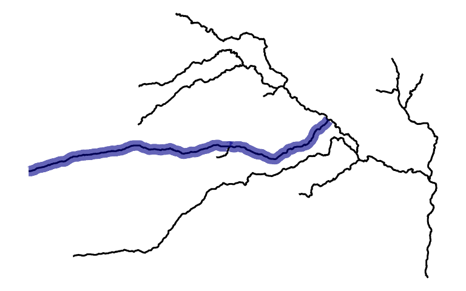
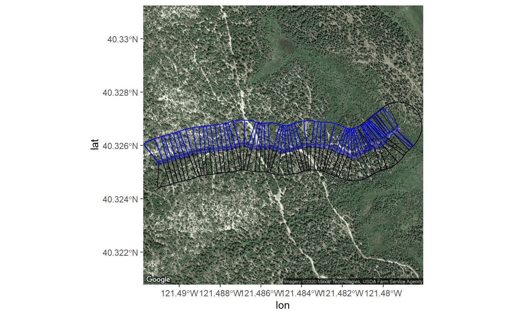
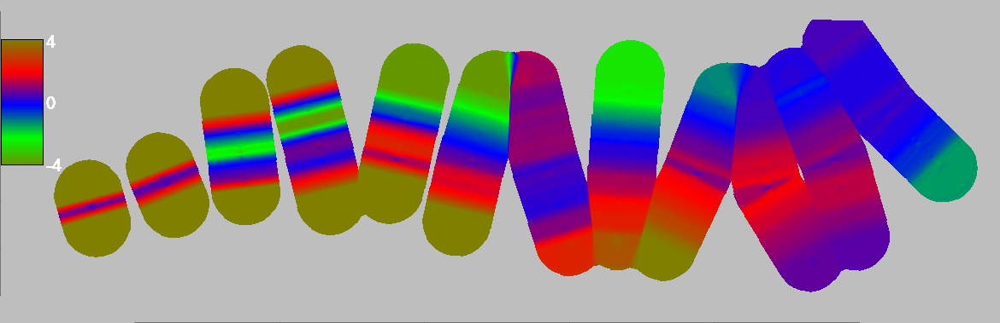
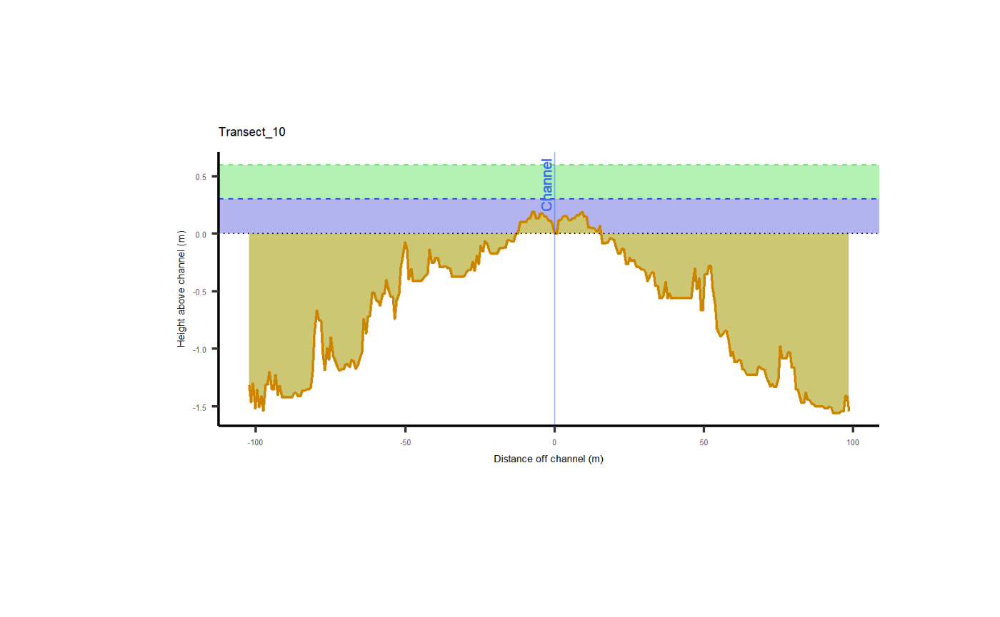

Example ProcessSpace tool application
Load the Data files and check them
These files are generic and come with the ProcessSpace
package. However, you will need to provide your own raster DEM and
streamline shapefile at some point. It is important to note that these
files are not specific to your project and may require customization to
fit your needs.
rasterFilePath <- system.file("external/raster.tif", package="ProcessSpace")
streamShapefilePath <- system.file("external/streams.shp", package="ProcessSpace")
streams <- sf::read_sf(streamShapefilePath)Now, let’s plot the raster hillshade. This process may take some time
to calculate the hillshade values. It is important to note that this
step is not required for running the ProcessSpace tool.
However, visualizing the hillshade can provide valuable insights into
the terrain and help with further analysis.
r <- raster::raster(rasterFilePath)
s <- raster::terrain(r, opt="slope")
a <- raster::terrain(r, opt="aspect")
h <- raster::hillShade(s,a)
rasterPlot <- h %>%
rasterToPoints() %>%
data.frame() %>%
ggplot() + geom_raster(aes(x=x,y=y,fill=layer),
show.legend = FALSE) +
geom_sf(data=streams) +
geom_sf_label(data=streams,aes(label=LINKNO),size=3,
label.padding=unit(.1,"lines")) +
scale_fill_viridis_c() + theme_minimal()
rasterPlot
Let’s imagine that we want to gather more information about stream
segments 12 and 20. We can select these segments using
any method as long as we only include them in the
*ProcessSpace* functions. In this example, we will use the
dplyr::filter function to create a new object based on the
LINKNO field. However, you could also use a spatial filter or
other filtering methods. If your streamfile does not have a LINKNO
attribute, you can use the unique identifier column for your
dataset.
After selecting the segments, we can plot the results and confirm
that we have chosen the correct ones. We will highlight the selected
segments in blue. It is important to note that the
ProcessSpace tool cannot handle branching stream
structures. Therefore, we need to ensure that we only select one flow
path without missing any segments in the middle.
targetStream <- streams %>% dplyr::filter(LINKNO %in% c(12,20))
#Check that you grabbed the right streams:
ggplot(streams) + geom_sf() +
geom_sf(data=targetStream,col="blue4",linewidth=3,alpha=.6) +
theme_nothing()
Great. We clearly grabbed the correct segments.
Lets run it through the tool!
First, generate the cross sections:
This function places evenly spaced points along a selected stream
file at a specified interval and draws semi-perpendicular cross sections
at each point for a given length. To indicate the flow direction of the
stream, the argument cut1Dir should be used. For example,
if the stream flows from West to East, input “W”, and if it flows from
North to East, input “N”.
The cross section lines are placed without using a raster file, so the package cannot determine the flow direction automatically.
Additionally, if the ggmap package is linked to a Google
Cloud Platform account, the function will return a satellite image of
the location being analyzed. If the package is not linked, a topographic
map will be returned instead.
transectObject <- targetStream %>%
generateCrossSections(xSectionDensity = units::as_units(10,"m"),
googleZoom=16,
xSectionLength = units::as_units(100,"m"),
cut1Dir = "W")## Realigning stream upstream to downstream. -- Completed in 0.09 mins.
## We can examine the transectObject that is returned by
this function. It should be a list with eight named entries:
mainLine, leftSide, rightSide,
ls0, rs0, plotBbox,
satImage, and sampledPoints. At this point, we
can either stop the process and use the generated cross sections for
another purpose, or we can continue with additional
*ProcessSpace* functions. However, it’s important to note
that the cross sections haven’t been used to extract elevations from the
raster file yet, so they only represent the spatial locations of the
cross sections to be sampled. If you want to extract elevations, you’ll
need to use additional functions.
transectObject$satImage %>% ggmap() +
geom_sf(data=transectObject$mainLine %>% sf::st_transform(4326),
col="blue4",alpha=.5,size=2,inherit.aes = FALSE) +
geom_sf(data=transectObject$ls0 %>% sf::st_transform(4326),
inherit.aes = FALSE) +
geom_sf(data=transectObject$rs0 %>% sf::st_transform(4326),
col="blue",inherit.aes = FALSE) +
geom_sf(data=transectObject$leftSide %>% sf::st_transform(4326),inherit.aes = FALSE) +
geom_sf(data=transectObject$rightSide %>% sf::st_transform(4326),
col="blue",inherit.aes = FALSE)
Second, run it through a series of manipulations:
The ProcessSpace package consists of approximately ten
functions that are used to perform the analysis. These functions can be
executed individually, as demonstrated in the commented code below.
Alternatively, the allAtOnce function can be used to
execute all of the functions together.
It is important to note that the package’s functions are designed to
work seamlessly together, and executing them in the correct order is
crucial to obtaining accurate results. Therefore, it is recommended to
use the allAtOnce function to ensure that the analysis is
performed correctly.
##Long and version:
# transectObject <- transectObject %>%
# addTopoLines(rasterDir = rasterFilePath) %>%
# addStreamChannels(rasterDir = rasterFilePath,streamDir = streamShapefilePath) %>%
# addCrossSectionElevations(rasterDir = rasterFilePath) %>%
# addProcessSpace() %>%
# buildXSectionPlot(plotFileName = "exampleOutput.pdf",streamDir = streamShapefilePath) %>%
# rasterPlotter(rasterDir = rasterFilePath)
## Short and version:
transectObject <- transectObject %>% allAtOnce(outputFilename = "exampleOutput.pdf",
rasterDir = rasterFilePath,
verticalCutoff=8,
streamDir = streamShapefilePath,
returnObject = TRUE,
doExportSpatial = FALSE)## Adding TopoLines -- Completed in 0.03 mins.
## Extracting Cross Section Elevations -- Completed in 0.1 mins.
## Calculating Process Space Polygons -- Completed in 1.46 mins.
## Generating Map Plot -- Completed in 0.01 mins.
## ## Generating Detrended Elevation Raster[inverse distance weighted interpolation]
## -- Completed in 0.34 mins.
## Then export the results as a comprehensive KMZ file:
To create a comprehensive KMZ file, export the results including the
cross section plots embedded within it. By clicking on the points along
the stream file, the cross section plots can be accessed. This can also
be done using the allAtOnce function with the
doExportSpatial = TRUE argument. However, note that
producing the ggplot files for each transect can be time-consuming,
taking approximately 1 second per plot.
exportSpatials(transectObject,sectionName = "exampleOutput")Here’s what the detrended raster and a single cross section plot can look like:
In the KMZ, areas of the map that have lower elevations than the stream are colored green, areas that have similar elevations to the stream are colored blue, and areas that have higher elevations than the stream are colored from red to tan. The raster is displayed here is using a default palette that is different from the kmz. It is important to note that the detrended raster is based on the cross sections, so if there are relatively few cross sections generated, as seen in this example, the output raster will have edge artifacts. To obtain a smoother detrended raster, the code should be rerun with an increased density of cross sections, such as every 2 meters. This will result in a more accurate representation of the terrain.
# legend <- magick::image_read("exampleOutput_El_legend.png")
# detrend <- magick::image_read("exampleOutput_El.png")
# magick::image_mosaic(c(magick::image_background(detrend,"grey"),legend))
plot(transectObject$detrendedRaster)
Cross sections are visual representations of the stream channel and its surroundings, viewed as if you were looking upstream. The graph below shows a typical cross section, with elevations marked in blue and green bands that represent distances within 1ft and 2ft of the stream channel, respectively. By examining the cross section, we can see that the stream is flowing through a highly incised channel, which means that the channel is deeply cut into the surrounding terrain. The terrain slopes downhill in perpendicular directions from the stream path, indicating that the stream is flowing through a valley or canyon.
In this particular case, the stream flow is caused by a road capture event, which occurs when a road or other man-made structure diverts water from its natural path. In this case, the road has captured the flow of the stream, causing it to run along the top of a ridge. This can have significant impacts on the surrounding ecosystem, including changes to water quality, erosion, and habitat loss. Understanding the topography of the stream and its surroundings is crucial for managing these impacts and ensuring the health of the ecosystem.
plot(magick::image_read("exampleOutput-Images/Transect_5_temp_.png"))
You can save the detrended raster file to load into other software like ArcMap.
transectObject$detrendedRaster %>%
raster::raster() %>%
raster::writeRaster("DetrendedRaster.tif", overwrite=TRUE)